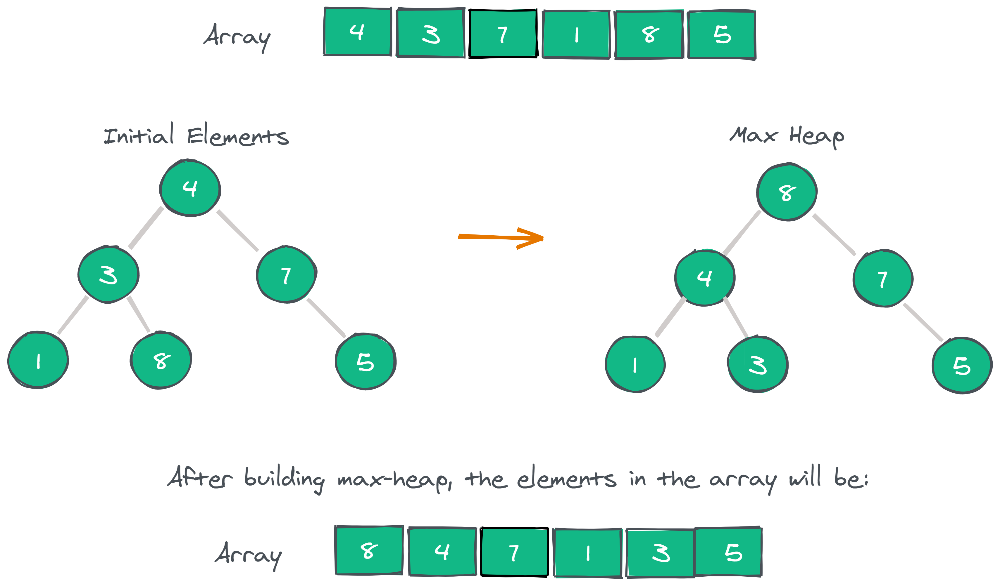

Average Complexity O(n × log n)
Best Case O(n × log n)
Worst Case O(n × log n)
Space Complexity O(1)

Description:
In computer science, heapsort is a comparison-based sorting algorithm. Heapsort can be thought of as an improved selection sort: like selection sort, heapsort divides its input into a sorted and an unsorted region, and it iteratively shrinks the unsorted region by extracting the largest element from it and inserting it into the sorted region. Unlike selection sort, heapsort does not waste time with a linear-time scan of the unsorted region; rather, heap sort maintains the unsorted region in a heap data structure to more quickly find the largest element in each step.
Although somewhat slower in practice on most machines than a well-implemented quicksort, it has the advantage of a more favorable worst-case O(n log n) runtime. Heapsort is an in-place algorithm, but it is not a stable sort.
Heapsort was invented by J. W. J. Williams in 1964.[2] This was also the birth of the heap, presented already by Williams as a useful data structure in its own right.